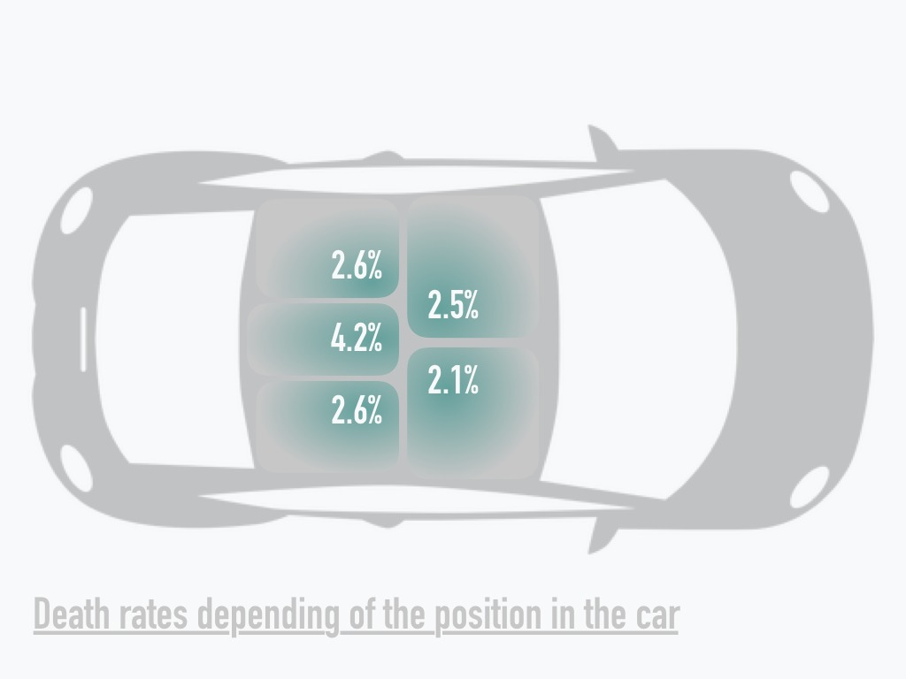

Introduction
Mrs Alice and Mr Bob are visiting France and are both afraid of being injured while driving. They think that it's unavoidable to have at least one accident in their life but want to minimize their chance to die. We offer to help them by looking at previous years accidents informations that we extracted from a dataset containing all the traffic accidents in France over the last 10 years. In order to do so, we will try to answer the following questions : Is there a way to minimize their chance to die? What are the elements that increase the number of deadly accidents or their severity ? What is the impact of security equipments in accidents death rates ?
2018 has been the safest year, in the past ten years.
Before helping Mrs Alice and Mr Bob, we will start by looking at the latest trends in France. Those can provide useful insights about how the number of accidents have evolved through time.

Even if the number of accidents on the French roads has remained almost constant between 2013 and 2017, since 2008 it has decreased by 25%. 2018 has been the safest year with only 57,783 accidents. We can also dig deeper and take into account the different months. Indeed the number of accidents vary and depends of the period of the year. On the following plot we can observe that some months like October, June or July have a high number of accidents while August and September are safer on average.
Some results were unexpected. In February for example, with the winter, we could have expected more accidents. In August, because of the holiday break and the departures, we could have expected more accidents.
But the number of accident itself is not enough to describe the trends. The gravity is another useful indicator that needs to be taken into account. It is measured as being the level of injury per passenger caused by the accident.
As we can observe on the above plots, two different trends can be identified. The first one from 2008 to 2013 leads to a sudden drop of in each category. This is due to the decrease of accidents on the same period. The second trend since 2014 shows an increase of unscathed people which is a good point, but the number of injured and slightly injured people went up too. These graphs are influenced by the number of accident, but also by the number of persons involved in accidents.
As the upper graph shows, most of the accidents involve less than 4 people. Indeed, most of the time people take the car alone, such as to get to work. As a result, accidents involve few people in average and most of the time, only one vehicle.
1. Be the right person
In this part, we were curious to know if gender and age have an impact on the road accidents and on their gravities. In our dataset, we could not differentiate between the passengers and the drivers, but still we could get an indication of the consequences of accidents on people.
62% of women are injured in car accidents.
Over the past ten years we recorded 88,218 men involved in accidents for only 41,951 women. This numbers includes both conductors and passengers. Moreover 3,05% of this men died for only 1.89% of the women. Men and women are not equal on the road and don’t face the same risks. This can be linked to the fact that women drive safer and are less reckless behind the wheel.
The age of a person influences both the probability to be in an accident and to die within. For the men, both probabilities decrease with age. The men and women pyramid shows that the 20-30 years old are the people that are the most prone to be involved in accidents and to die in an accident. For the women the number of death increase after 50 years, which can be due to the vulnerability of people at this age.
On another hand, looking at the risks of injuries, we notice that even though there are more men exposed to accidents than women, there are less women that end up completely safe compared to men, and there are more risks of injuries as a woman than as a man (62% of chance to be injured as a woman versus 53% as a man).
If Mrs Alice drives safely like most of the women, she can be comforted that she has less risks of dying than the average drivers. In this case, Mrs Alice should probably be the pilot here, ladies first !
2. At the right place
In this section, we would like to know how the number of accidents are distributed around France. Are there any specific regions where accidents are concentrated ?
5591 injuries in Paris, in 2018.
All accidents are not spread uniformly across the country. Some regions and specific areas have more accidents than others. On the following map, we can observe that the departments with the highest number of accidents are located where big cities are such as Paris and Marseille. In the middle of the France, where the density of population is lower, fewer accidents happened.
Mr Bob and Mrs Alice would better avoid visiting the big cities of France.
3. At the right moment
Below, we aim to analyze the environment of the accidents, to see if some weather conditions could trigger or affect the gravity of an accident.
12% of people involved in accidents are killed in a stormy or foggy weather.
We showed previously that the number of accident varies during the year. This may be due to the weather that also impacts the road conditions. We showed that while driving, the worst conditions are fog, strong winds and dazzling weather, when the visibility on the road is the less. The weather condition with the least percentage of death per accident is during light rainfall. Even with heavy rainfall, this percentage is just above normal conditions. In these conditions, people tend to be more careful.

Mr Bob and Mrs Alice can drive safely regardless of the weather, unless if they are unlucky enough to face a storm.
4. Security
The first thing to be looked at are the vehicle involved in the accidents. Indeed many parameters depends on it such as the speed before impact and the average injuries of the passengers.
18,7% of killed people in accidents were not wearing a seatbelt.
Besides the security equipments are also different in a car or on a bike and do not protect the same way. Since we already know the security equipments prevent disasters, in this section we want to get an idea of how important they are, quantitatively.
We can also observe different rates of injuries depending on the seat in a car. It is obvious that most collisions in car crashes are frontal. But because of the fact that the middle rear seat often do not have airbags and is exposed to the front window, it is the most deadly place.
It can be easily shown that the use of security equipment strongly reduce the severity of any injuries. We notice that the seatbelt clearly reduce the number of killed people in accidents, and divides the probability of dying by ten.
Mr Bob and Mrs Alice, wear your seatbelts !